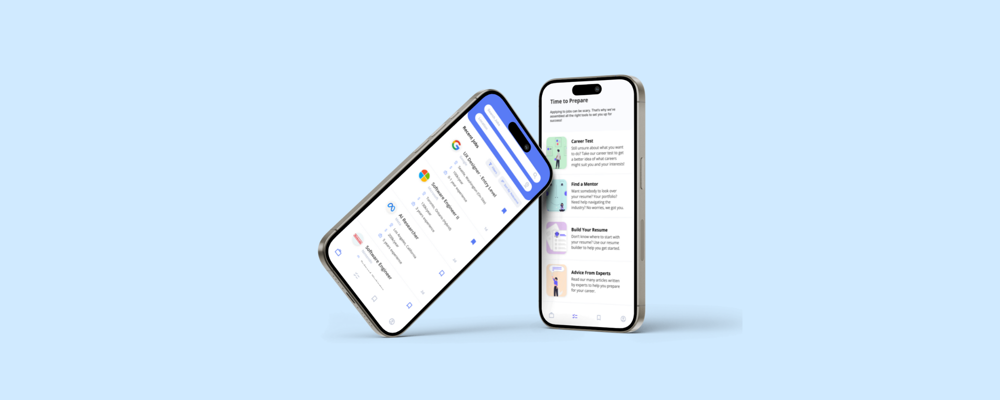
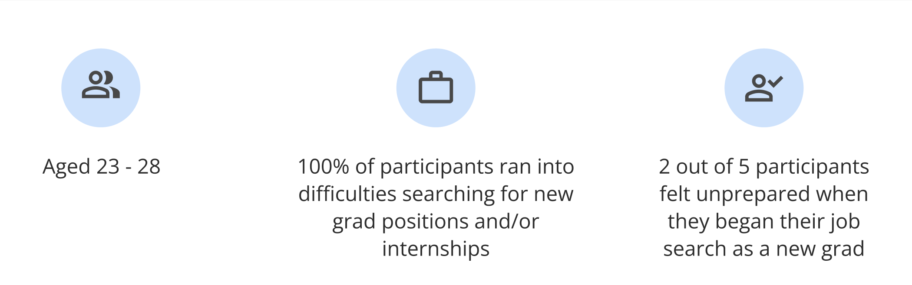
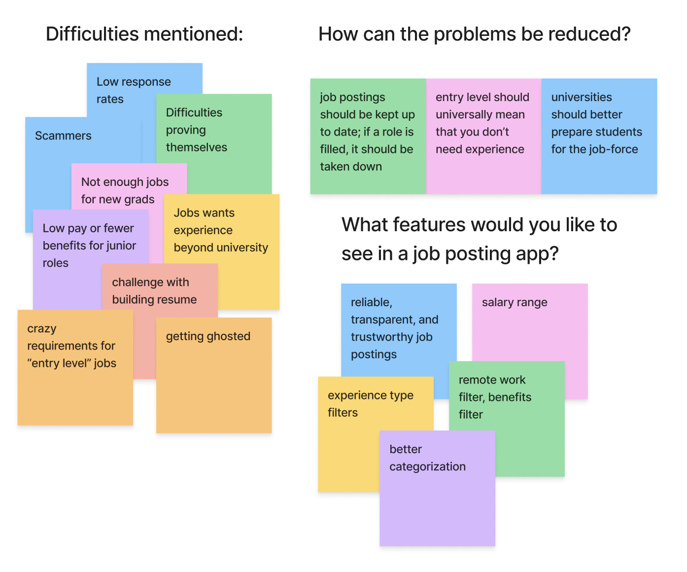
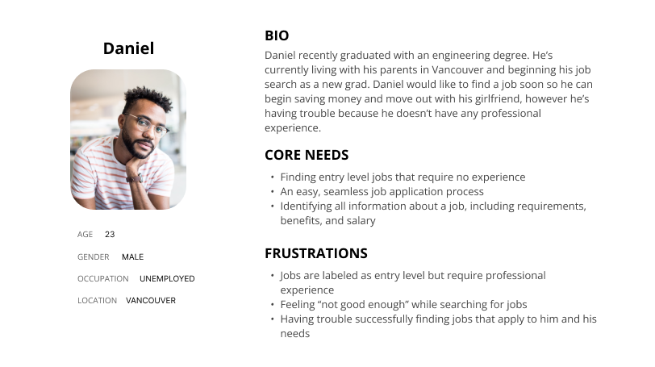
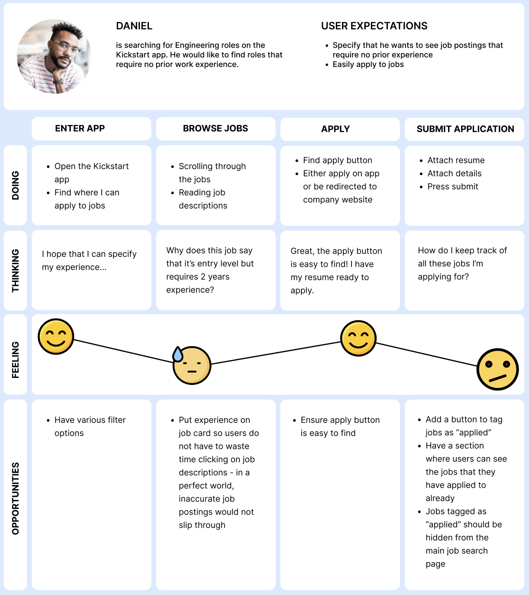
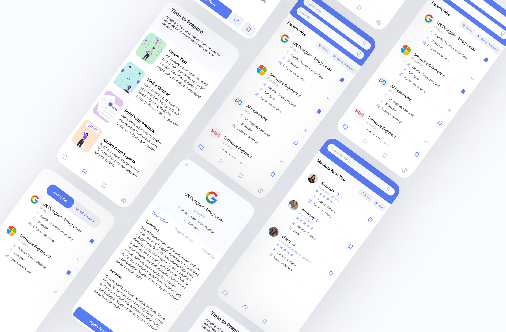

Back to top

Kickstart - Helping students and new grads find jobs
Project Type
Personal Project
Personal Project
Duration
March 2023,
1 week
March 2023,
1 week
Methods
Survey,
User Personas,
User Journey Map
Survey,
User Personas,
User Journey Map
Key Skills
Prototyping,
App Design
Prototyping,
App Design
Overview
Background Info
This is a personal project that I was inspired to complete after hearing friends complain about how hard it is to find a job after graduating. I also ran into my own struggles trying to find internships during school, and became frustrated with job search websites showing me job postings that I wasn't qualified for. I noticed a big issue with job search platforms and the filters they have in place. I also noticed how little school really prepares us for the "real world", and decided that it would be helpful for there to be a one-stop-shop to prepare students and new grads for their careers.My Role
Prototyper, UX Designer - Independent personal projectDesign Process

Defining the problem
Market Research
I sent out a survey to 5 participants to gather some insights about their current pain points when it comes to job-posting applications and looking for jobs as a new grad or student.  I gathered all responses to gain a clearer picture of the issues that users currently face, and how they think they can be solved. The Problem
Current job posting websites are insufficient for students and new grads searching for jobs, because job postings are inaccurate making it difficult for students to find jobs that they are qualified for. Furthermore, many students/new grads feel overwhelmed while looking for their first job because they feel unprepared and unqualified. Students/new grads would like to see more transparent and more reliable job postings, and more filters while searching for jobs; they would also like more tools to help them better prepare for the job search.Understanding the users
User Persona
I took elements from the surveys and encompassed them within a persona. I wanted to make sure that the persona accurately portrayed a new grad, who may be a little anxious about applying to jobs for the first time. Another big problem that people faced was a lack of experience right out of school, due to other obligations during their degrees such as needing to have part-time jobs to pay for school or dealing with mental health issues. Therefore, it was important that Daniel had no experience right out of his engineering degree. User Journey Map
A user journey map was created to better understand the pain points that Daniel experiences while using a job-posting app. I tried to identify areas of improvement and extra features that could be added to the application.
prototype
Wireframes
I created wireframes of the application before moving onto the final design.
Final Design
High-Fidelity Prototype
Conclusions
What I Learned
01
User Personas and User Journey Maps are key! In this project, especially since I didn't have a large number of participants, creating the user personas and user journey map helped me better empathize with the user and detect areas for improvement that I may have not noticed otherwise.
02
Sometimes, users' problems cannot be solved with an app - and that's okay! Some participants voiced that a solution to the issue would be adding more job postings for new grads/students. However, this isn't up to the app to decide, rather it's up to companies who are opening up positions. The best thing we can do as designers is ease the process - for example, making it easier for new grads to find the roles that are already out there and that are best suited for them.
03
Survey questions need to be clear. One of my participants didn't understand what a question in the survey was asking, even though I thought it was a simple question. I realize it was my error for not framing the question properly. Especially with surveys, since the researcher is not there to clarify, the questions have to be very clear and need context.